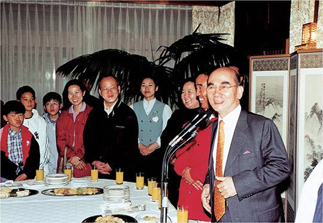
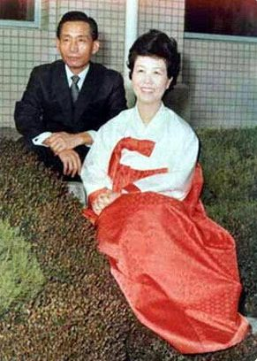

연재일 2015-06-15출처 조선일보 프리미엄조선 연재
<①편에서 계속>
김대중의 승리는 박태준에게 포스코 최고경영자 자리에서 김영삼의 사람을 밀어내고 포스코의 사람을 앉힐 수 있는 힘도 주었다. 그것은 김대중 대통령이 박태준 자민련 총재에게 건네는 예의의 선물이기도 했다. 1998년 3월 김만제(金滿堤)가 포스코 회장을 물러나고 포스코에서 잔뼈가 굵은, 박태준이 유난히 아껴온 엔지니어 유상부(劉常夫)가 이어받았다. 그때까지도 포스코의 지배주주는 정부 기관들이어서 대통령이 포스코 최고경영자의 인사권을 쥐고 있었다.
정축국치를 극복해 나가는 신고(辛苦)의 시간대에서 ‘재벌개혁의 전도사’라 불렸던 박태준은 2000년 새해에 뉴밀레니엄의 첫 총리라는 기록을 남기지만 김대중-김종필 연대의 틀이 깨진 정치적 후유증 속에서 그해 5월 19일 총리직을 자진 사퇴한다.
총리 공관으로 초대한 포스코교육재단 산하의 초등학교 학생들과 함께.
이제 무엇이 박태준을 어서 오라고 손짓할 것인가? 진작부터 그의 몸속에 도사리고 있는 지병이 그의 삶에게 피할 수 없는 싸움을 걸어오고 있었다. 이대환의 『박태준』 평전은 역사의 무대를 퇴장하는 박태준의 대미를 이렇게 쓰고 있다.
<20세기 후반기의 한국 산업화 무대에서 단연 빼어난 주역이었던 박태준. 세계가 인정하는 ‘세계 최고의 철강인’ 박태준. 1997년 10월부터 2000년 4월까지, 한국이 50년 만에 수평적 정권교체를 달성하고 비참한 국가부도의 위기를 극복해낸 그 절박한 시기에, 그는 정치권력의 무대에서 과거의 순수한 열정과 화려한 경력을 바탕으로 김대중의 자문과 조연을 맡았다.
역사의 관습은 조연에 대한 대접과 평가가 지나치게 옹색하다. 관찰의 시각을 아주 좁혀서 오직 ‘세기말과 신세기의 벽두에 걸친 절체절명의 국가적 위기의 2년 6개월 무대’만 살펴볼 때, 박태준은 김대중 옆에서 어떤 자세로 어떤 공헌을 남겼을까?
박태준이 떠난 뒤 김대중은 건강에 대한 일반인의 우려를 넘어 ‘국민의 정부’를 완주했다. 역사적인 6·15남북정상회담이 실현되었다. 그는 노벨평화상을 받았다. 현직 대통령의 영광을 축하하는 관제(官製) 현수막이 방방곡곡에 걸렸다. 그러나 그것은 대다수 국민의 가슴에는 걸리지 못했다. 불행히 통치권력의 핵심요직을 맡았던 그의 측근들이 비리에 연루되어 줄줄이 구속되었다.
부패로 얼룩진 정권의 맥을 더 빼려는 것인지 평양의 김정일은 끝내 서울로 오지 않았다. 그 뒤, 북핵 문제는 어렵게 꼬였다. 남북관계는 1972년 박정희-김일성의 ‘7·4남북공동성명’을 하나의 큰 기록으로 남긴 것처럼, 2000년 김대중-김정일의 ‘6·15선언’도 그런 전철을 따라 보낼 것인가?>
정치권력의 무대에서 퇴장한 ‘세계 최고의 철강인’은 지칠 대로 지친 몸으로 이제 자신의 건강을 되찾기 위한 고달픈 여정에 올랐다. 그의 체력과 의지가 이번엔 자신의 폐 밑에 큼직하게 자라난 물혹의 억압과 그 고통으로부터 인생의 황혼기를 해방시켜야 하는 차례를 맞았다.
목숨 건 대수술의 결심을 세운 박태준은 거실에서 자신을 지켜보고 있는, 자신보다 훨씬 젊은 박정희의 사진을 쳐다보았다. 4년여 해외 유랑 시절에도 늘 방안을 지켜주었던 사람, 도쿄 12평 아파트에서 맞은 새해 첫날에는 양복을 차려입은 그의 세배를 말없이 받아준 사람. 물끄러미 박정희를 쳐다보는 박태준은 별안간 귓전을 맴도는 친근한 목소리를 듣고 있었다.
박정희 대통령과 육영수 여사.
“임자, 힘내야지. 됐어. 그만하면 많이 했어.”
박태준의 두 눈이 돋보기 유리알 뒤에서 촉촉이 젖고 있었다.

